`geom_smooth()` using formula 'y ~ x'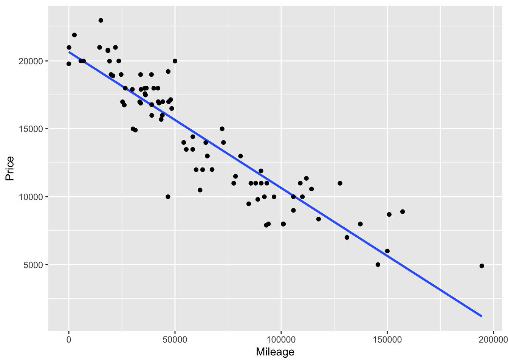
Covariates
One of the most important ideas in science is “experiment”. In a simple, ideal form of an experiment, you cause one explanatory factor to vary, hold all the other conditions constant, and observe the response. A famous story of such an experiment involves Galileo Galilei (1564-1642) dropping balls of different masses but equal diameter from the Leaning Tower of Pisa.1 Would a heavy ball fall faster than a light ball, as theorized by Aristotle 2000 years previously? The quantity that Galileo varied was the weight of the ball, the quantity he observed was how fast the balls fell, the conditions he held constant were the height of the fall and the diameter of the balls. The experimental method of dropping balls side by side also holds constant the atmospheric conditions: temperature, humidity, wind, air density, etc.
Of course, Galileo had no control over the atmospheric conditions. By carrying out the experiment in a short period, while atmospheric conditions were steady, he effectively held them constant.
Today, Galileo’s experiment seems obvious. But not at the time. In the history of science, Galileo’s work was a landmark: he put observation at the fore, rather than the beliefs passed down from authority. Aristotle’s ancient theory, still considered authoritative in Galileo’s time, was that heavier objects fall faster.
The ideal of “holding all other conditions constant” is not always so simple as with dropping balls from a tower in steady weather. Consider an experiment to test the effect of a blood-pressure drug. Take two groups of people, give the people in one group the drug and give nothing to the other group. Observe how blood pressure changes in the two groups. The factor being caused to vary is whether or not a person gets the drug. But what is being held constant? Presumably the researcher took care to make the two groups as similar as possible: similar medical conditions and histories, similar weights, similar ages. But “similar” is not “constant.”
For non-experimentalists – people who study data collected through observation, without doing an experiment – a central question is whether there is a way to mimic “holding all other conditions constant.” For example, suppose you observe the academic performance of students, some taught in large classes and some in small classes, some taught by well-paid teachers and some taught by poorly-paid teachers, some coming from families with positive parental involvement and some not, and so on. Is there a way to analyze data so that you can separate the influences of these different factors, examining one factor while, through analysis if not through experiment, holding the others constant?
In this chapter you’ll see how models can be used to examine data as if some variables were being held constant. Perhaps the most important message of the chapter is that there is no point hiding your head in the sand; simply ignoring a variable is not at all the same thing as holding that variable constant. By including multiple variables in a model you make it possible to interpret that model in terms of holding the variables constant. But there is no methodological magic at work here. The results of modeling can be misleading if the model does not reflect the reality of what is happening in the system under study. Understanding how and when models can be used effectively, and when they can be misleading, will be a major theme of the remainder of the book.
The common phrase “all other things being equal” is an important qualifier in describing relationships. To illustrate: A simple claim in economics is that a high price for a commodity reduces the demand. For example increasing the price of heating fuel will reduce demand as people turn down thermostats in order to save money. But the claim can be considered obvious only with the qualifier all other things being equal. For instance, the fuel price might have increased because winter weather has increased the demand for heating compared to summer. Thus, higher prices may be associated with higher demand. Unless you hold other variables constant – e.g., weather conditions – increased price may not in fact be associated with lower demand.
In fields such as economics, the Latin equivalent of “all other things being equal” is sometimes used: “ceteris paribus”. So, the economics claim would be, “higher prices are associated with lower demand, ceteris paribus.”
Although the phrase “all other things being equal” has a logical simplicity, it’s impractical to implement “all.” Instead of the blanket “all other things,” it’s helpful to be able to consider just “some other things” to be held constant, being explicit about what those things are. Other phrases along these lines are “taking into account …” and “controlling for ….” Such phrases apply when you want to examine the relationship between two variables, but there are additional variables that may be coming into play. The additional variables are called “covariates” or “confounders” .
A covariate is just an ordinary variable. The use of the word “covariate” rather than “variable” highlights the interest in holding this variable constant, to indicate that it’s not a variable of primary interest.
This news report appeared in 2007:
Heart Surgery Drug Carries High Risk, Study Says. A drug widely used to prevent excessive bleeding during heart surgery appears to raise the risk of dying in the five years afterward by nearly 50 percent, an international study found. The researchers said replacing the drug – aprotinin, sold by Bayer under the brand name Trasylol – with other, cheaper drugs for a year would prevent 10,000 deaths worldwide over the next five years.
Bayer said in a statement that the findings are unreliable because Trasylol tends to be used in more complex operations, and the researchers’ statistical analysis did not fully account for the complexity of the surgery cases. The study followed 3,876 patients who had heart bypass surgery at 62 medical centers in 16 nations. Researchers compared patients who received aprotinin to patients who got other drugs or no antibleeding drugs. Over five years, 20.8 percent of the aprotinin patients died, versus 12.7 percent of the patients who received no antibleeding drug. [This is a 64% increase in the death rate.] When researchers adjusted for other factors, they found that patients who got Trasylol ran a 48 percent higher risk of dying in the five years afterward. The other drugs, both cheaper generics, did not raise the risk of death significantly. The study was not a randomized trial, meaning that it did not randomly assign patients to get aprotinin or not. In their analysis, the researchers took into account how sick patients were before surgery, but they acknowledged that some factors they did not account for may have contributed to the extra deaths. - Carla K. Johnson, Associated Press, 7 Feb. 2007 The report involves several variables. Of primary interest is the relationship between (1) the risk of dying after surgery and (2) the drug used to prevent excessive bleeding during surgery. Also potentially important are (3) the complexity of the surgical operation and (4) how sick the patients were before surgery. Bayer disputes the published results of the relationship between (1) and (2) holding (4) constant, saying that it’s also important to hold variable (3) constant.
In the aprotinin drug example, the total relationship involves a death rate of 20.8 percent of patients who got aprotinin, versus 12.7 percent for others. This implies an increase in the death rate by a factor of 1.64. When the researchers looked at a partial relationship (holding constant the patient sickness before the operation), the death rate was seen to increase by less: a factor of 1.48. In evaluating the drug, it’s best to examine its effects holding other factors constant. So, even though the data directly show a 64% increase in the death rate, 48% is a more meaningful number since it adjusts for covariates such as patient sickness. The difference between the two estimates reflect that sicker patients tended to be given aprotinin. As the last paragraph of the story indicates, however, the researchers did not take into account all covariates. Consequently, it’s hard to know whether the 48% number is a reliable guide for decision making.
The term “partial relationship” describes a relationship with one or more covariates being held constant. A useful thing to know in economics might be the partial relationship between fuel price and demand with weather conditions being held constant. Similarly, it’s a partial relationship when the article refers to the effect of the drug on patient outcome in those patients with a similar complexity of operation.
In contrast to a partial relationship where certain variables are being held constant, there is also a “total relationship”: how an explanatory variable is related to a response variable letting those other explanatory variables change as they will. (The corresponding Latin phrase is “mutatis mutandis”.)
Here’s an everyday illustration of the difference between partial and total relationships. I was once involved in a budget committee that recommended employee health benefits for the college at which I work. At the time, college employees who belonged to the college’s insurance plan received a generous subsidy for their health insurance costs. Employees who did not belong to the plan received no subsidy but were instead given a moderate monthly cash payment. After the stock-market crashed in year 2000, the college needed to cut budgets. As part of this, it was proposed to eliminate the cash payment to the employees who did not belong to the insurance plan. This proposal was supported by a claim that this would save money without reducing health benefits. I argued that this claim was about a partial relationship: how expenditures would change assuming that the number of people belonging to the insurance plan remained constant. I thought that this partial relationship was irrelevant; the loss of the cash payment would cause some employees, who currently received health benefits through their spouse’s health plan, to switch to the college’s health plan. Thus, the total relationship between the cash payment and expenditures might be the opposite of the partial relationship: the savings from the moderate cash payment would trigger a much larger expenditure by the college.
Perhaps it seems obvious that one should be concerned with the “big picture,” the total relationship between variables. If eliminating the cash payment increases expenditures overall, it makes no sense to focus exclusively on the narrow savings from the suspending the payment itself. On the other hand, in the aprotinin drug example, for understanding the impact of the drug itself it seems important to take into account how sick the various patients were and how complex the surgical operations. There’s no point ascribing damage to aprotinin that might instead be the result of complicated operations or the patient’s condition.
Whether you wish to study a partial or a total relationship is largely up to you and the context of your work. But certainly you need to know which relationship you are studying.
Figure @ref(fig:price-vs-mileage) shows a scatter plot of the price of used Honda Accords versus the number of miles each car has been driven. The graph shows a pretty compelling relationship: the more miles that a car goes, the lower the price. This can be summarized by a simple linear model: price ~ mileage. Fitting such a model gives this model formula
price = 20770 - 0.10 × mileage.
Keeping in mind the units of the variables, the price of these Honda Accords typically falls by about 10 cents per mile driven. Think of that as the cost of the wear and tear of driving: depreciation.
`geom_smooth()` using formula 'y ~ x'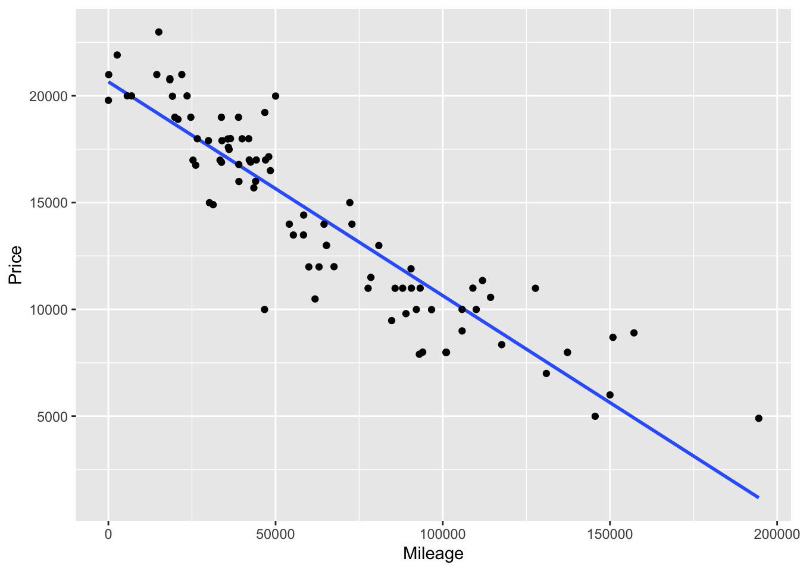
As the cars are being driven, other things are happening to them. They are wearing out, they are being involved in minor accidents, and they are getting older. The relationship shown in Figure @ref(fig:price-vs-mileage) takes none of these into account. As mileage changes, the other variables such as age are changing as they will: a total relationship.
In contrast to the total relationship, the partial relationship between price and mileage holding age constant tells you something different than the total relationship. The partial relationship would be relevant, for instance, if you were interested in the cost of driving a car. This cost includes gasoline, insurance, repairs, and depreciation of the car’s value. The car will age whether or not you drive it; the extra depreciation due to driving it will be indicated by the partial relationship between price and mileage holding age constant.
`geom_smooth()` using formula 'y ~ x'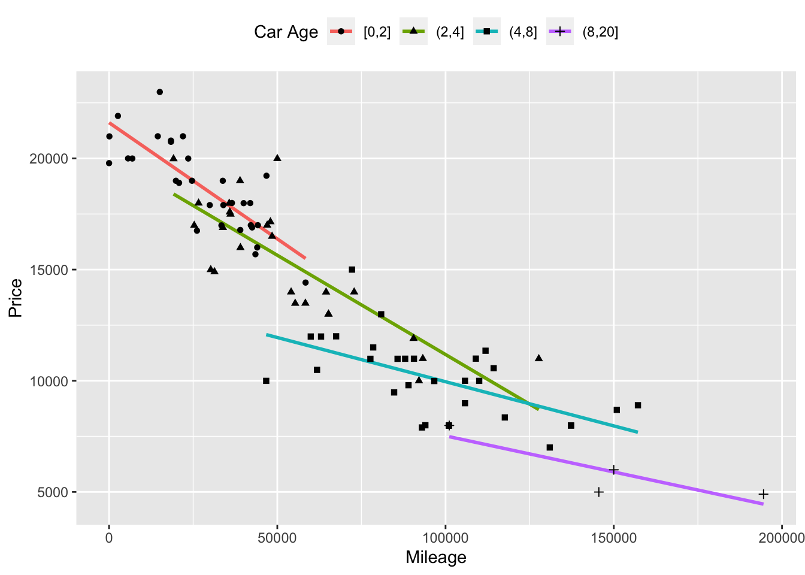
The most intuitive way to hold age constant is to look at the relationship between price and mileage for a subset of the cars; include only those cars of a given age. This is shown in Figure @ref(fig:price-vs-mileage2). The cars have been divided into age groups (less than 2 years old, between 3 and 4 years old, etc.) and the data for each group has been plotted separately together with the best fitting linear model for the cars in that group. From the figure it’s easy to see that the slope of the fitted models for each group is shallower than the slope fitted to all the cars combined. Instead of the price falling by about 10 cents per mile as it does for all the cars combined, within the 4-8 year old group the price decrease is only about 7 cents per mile, and only 3 cents per mile for cars older than 8 years.
By looking at the different age groups individually, you are holding age approximately constant in your model. The relationship you find in this way between price and mileage is a partial relationship. Of course, there are other variables that you didn’t hold constant. So, to be precise, you should describe the relationship you found as a partial relationship with respect to age.
Models make it easy to estimate the partial relationship between a response variable and an explanatory variable, holding one or more covariates constant.
The first step is to fit a model using both the explanatory variable and the covariates that you want to hold constant. For example, to find the partial relationship between car price and miles driven, holding age constant, fit the model price ~ mileage+age. For the car-price data from Figure @ref(fig:price-vs-mileage), this gives the model formula
price = 21330 - 0.077 × mileage - 538 × age
The second step is to interpret this model as a partial relationship between price and mileage holding age constant. A simple way to do this is to plug in some particular value for age, say 1 year. With this value plugged in, the formula for price as a function of mileage becomes
price = 21330 - 0.077 × mileage - 538 × 1 = 20792 - 0.077 × mileage
The partial relationship is that price goes down by 0.077 dollars per mile, holding age constant.
Note the use of the phrase “estimate the partial relationship” in the first paragraph of this section. The model you fit creates a representation of the system you are studying that incorporates both the variable of interest and the covariates in explaining the response values. In this mathematical representation, it’s easy to hold the covariates constant. If you don’t include the covariate in the model, you can’t hold it constant and so you can’t estimate the partial relationship between the response and the variable of interest while holding the covariate constant. But even when you do include the covariates in your model, there is a legitimate question of whether your model is a faithful reflection of reality; holding a covariate constant in a model is not the same thing as holding it constant in the real world. These issues, which revolve around the idea of the causal relationship between the covariate and the response, are discussed in Chapter 18.
If you are familiar with calculus and “partial derivatives”, you may notice that this rate is the partial derivative of price with respect to mileage. Using partial derivatives allows one to interpret more complicated models relatively easily. For example, Figure @ref(fig:price-vs-mileage2) shows pretty clearly that the price vs mileage lines have different slopes for different age group. To capture this in your model, you might choose to include an interaction term between mileage and age. This gives a model with four terms:
price = 22140 - 0.094 × mileage - 750× age + 0.0034 × mileage × age
For this model, the partial relationship between price and mileage is not just the coefficient on mileage. Instead it is the partial derivative of price with respect to mileage, or:
∂price / ∂mileage = −0.094 + 0.0034 × age
Taking into account the units of the variables, this means that for a new car (age = 0), the price declines by $0.09/mile, that is, 9.4 cents per mile. But for a 10-year old car, the decline is less rapid: −0.094 + 10×0.0034 = −0.060 – only six cents a mile.
The table contains the data on professional and sales employees of a large mid-western US trucking company: the annual earnings in 2007, sex, age, job title, how many years of employment with the company. Data such as these are sometimes used to establish whether or not employers discriminate on the basis of sex.
| sex | earnings | age | title | hiredyears |
|---|---|---|---|---|
| M | 35000 | 25 | PROGRAMMER | 0 |
| F | 36800 | 62 | CLAIMS ADJUSTER | 5 |
| F | 25000 | 34 | RECRUITER | 1 |
| M | 45000 | 44 | CLAIMS ADJUSTER | 0 |
| M | 40000 | 30 | PROGRAMMER | 5 |
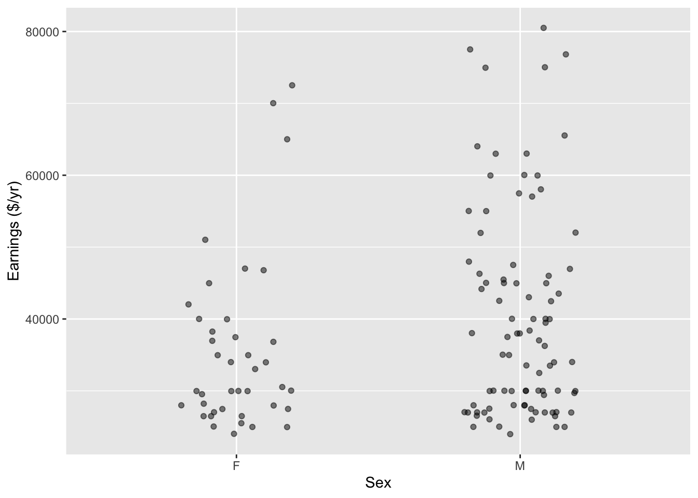
The data in Figure 1 reveals a clear pattern: men are being paid more than women. Fitting the model earnings ~ sex indicates the average difference in earnings between men and women:
lm(earnings ~ sex, data = mosaicModel::Trucking_jobs) %>% coefficients()(Intercept) sexM
35501.250 4735.098 Since earnings are in dollars per year, men are being paid, on average, $4735 more per year than women. This difference reflects the total relationship between earnings and sex, letting other variables change as they will.
Notice from the boxplot that even within the male or female groups, there is considerable variability in annual earnings from person to person. Evidently, there is something other than sex that influences the wages.
An important question is whether you should be interested in the total relationship between earnings and sex, or the partial relationship, holding other variables constant. This is a difficult issue. Clearly there are some legitimate reasons to pay people differently, for example different levels of skill or experience or different job descriptions, but it’s always possible that these legitimate factors are being used to mask discrimination.
For the moment, take as a covariate something that can stand in as a proxy for experience: the employee’s age. Unlike job title, age is hardly something that can be manipulated to hide discrimination. Figure 2 shows the employees’ earnings plotted against age. Also shown are the fitted model values of wages against age, fitted separately for men and women.
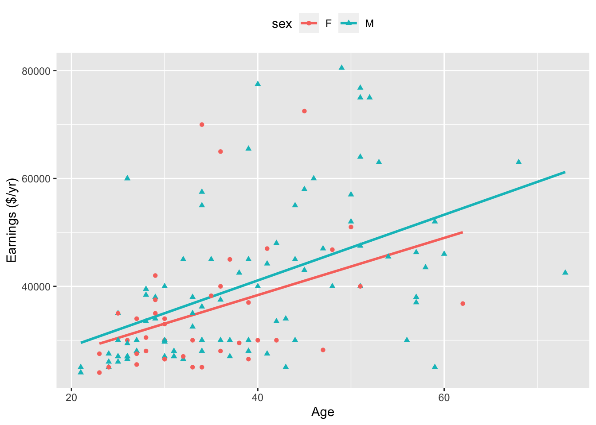
It’s evident that for both men and women, earnings tend to increase with age. The model design imposes a straight line structure on the fitted model values. The formulas for the two lines are:
# For females
lm(earnings ~ age, data = mosaicModel::Trucking_jobs %>% filter(sex=="F")) %>%
coefficients()(Intercept) age
17178.160 529.952 # For males
lm(earnings ~ age, data = mosaicModel::Trucking_jobs %>% filter(sex=="M")) %>%
coefficients()(Intercept) age
16734.9949 609.0916 From the graph, you can see the partial relationship between earnings and sex, holding age constant. Pick an age, say 30 years. At 30 years, according to the model, the difference in annual earnings is $1931, with men making more. At 40 years of age, the difference between the sexes is even more ($2722), at 20 years of age, the difference is less ($1140). All of these partial differences (holding age constant) are substantially less than the difference when age is not taken into account ($4735).
One way to summarize the differences in earnings between men and women is to answer this question: How would the earnings of the men have been different if the men were women? Of course you can’t know all the changes that might occur if the men were somehow magically transformed, but you can use the model to calculate the change assuming that all other variables except sex are held constant. This process is called “adjustment”.
To find the men’s wages adjusted as if they were women, take the age data for the men and plug them into the model formula for women. The difference between the earnings of men and women, adjusting for age, is $2125. This is much smaller than the difference, $4735, when earnings are not adjusted for age. Differences in age between the men and women in the data set appear to account for more than half of the overall earnings difference between men and women.
Of course, before you draw any conclusions, you need to know how precise these coefficients are. For instance, it’s a different story if the sex difference is 2125 \(\pm\) 10 or if it is 2125 \(\pm\) 5000. In the latter case, it would be sensible to conclude only that the data leave the matter of wage difference undecided. Later chapters in this book describe how to characterize the precision of an estimate.
Another key matter is that of causation. $2125 indicates a difference, but doesn’t say completely where the difference comes from. By adjusting for age, the model disposes of the possibility that the earnings difference reflects differences in the typical ages of male and female workers. It remains to be found out whether the earnings difference might be due to different skill sets, discrimination, or other factors.
Sometimes the total relationship is the opposite of the partial relationship. This is “Simpson’s paradox”.
One of the most famous examples involves graduate admissions at the University of California in Berkeley. It was observed that graduate admission rates were lower for women than for men overall. This reflects the total relationship between admissions and sex. But, on a department-by-department basis, admissions rates for women were consistently as high or higher than for men. The partial relationship, taking into account the differences between departments, was utterly different from the total relationship.
Consider another example of partial versus total relationships. In 1962, naturalist author Rachel Carson published Silent Spring [@silent-spring], a powerful indictment of the widespread use of pesticides such as DDT. Carson pointed out the links between DDT and dropping populations of birds such as the bald eagle. She also speculated that pesticides were the cause of a recent increase in the number of human cancer cases. The book’s publication was instrumental in the eventual banning of DDT.
The increase in deaths from cancer over time is a total relationship between cancer deaths and time. It’s relevant to consider a partial relationship between the number of cancer deaths and time, holding the population constant. This partial relationship can be indicated by a death rate: say, the number of cancer deaths per 100,000 people. It seems obvious that the covariate of population size ought to be held constant. But there are still other covariates to be held constant. The decades before Silent Spring had seen a strong decrease in deaths at young ages from other non-cancer diseases which now were under greater control. It had also seen a strong increase in smoking. When adjusting for these covariates, the death rate from cancer was actually falling, not increasing as Carson claimed.[@tierney-NYT-june-5-2007]
The distinction between explanatory variables and covariates is in the modeler’s mind. When it comes to fitting a model, both sorts of variables are considered on an equal basis when calculating the residuals and choosing the best fitting model to produce a model function. The way that you choose to interpret and analyze the model function is what determines whether you are examining partial change or total change.
The intuitive way to hold a covariate constant is to do just that. Experimentalists arrange their experimental conditions so that the covariates are the same. Think of Galileo using balls of the same diameter and varying only the mass. In a clinical trial of a new drug, perhaps you would test the drug only on women so that you don’t have to worry about the covariate sex.
When you are not doing an experiment but rather working with observational data, you can hold a covariate constant by throwing out data. Do you want to see the partial relationship between price and mileage while holding age constant? Then restrict your analysis to cars that are all the same age, say 3 years old. Want to know the relationship between breath-holding time and body size holding sex constant? Then study the relationship in just women or in just men.
Dividing data up into groups of similar cases, as in Chapter 4, is an intuitive way to study partial relationships. It can be effective, but it is not a very efficient way to use data.
The problem with dividing up data into groups is that the individual groups may not have many cases. For example, for the used cars shown in Figure @ref(fig:price-vs-mileage2) there are only a dozen or so cases in each of the groups. To get even this number of cases, the groups had to cover more than one year of age. For instance, the group labeled “age < 8” includes cars that are 5, 6, 7, and 8 years old. It would have been nice to be able to consider six-year old cars separately from seven-year old cars, but this would have left me with very few cases in either the six- or seven-year old group.
At the same time, it seems reasonable to think that 5- and 7-year old cars have something to say about 6-year old cars; you would expect the relationship between price and mileage to shift gradually with age. For instance, the relationship for 6-year old cars should be intermediate to the relationships for 5- and for 7-year old cars.
Modeling provides a powerful and efficient way to study partial relationships that does not require studying separate subsets of data. Just include multiple explanatory variables in the model. Whenever you fit a model with multiple explanatory variables, the model gives you information about the partial relationship between the response and each explanatory variable with respect to each of the other explanatory variables.
Chapter 7 showed some models relating school expenditures to SAT scores. The model sat ~ 1 + expend produced a negative coefficient on expend, suggesting that higher expenditures are associated with lower test scores. Including another variable, the fraction of students who take the SAT (variable frac) reversed this relationship.
The model sat ~ 1 + expend + frac attempts to capture how SAT scores depend both on expend and frac. In interpreting the model, you can look at how the SAT scores would change with expend while holding frac constant. That is, from the model formula, you can study the partial relationship between SAT and expend while holding frac constant.
The example also looked at a couple of other fiscally related variables: student-teacher ratio and teachers’ salary. The total relationship between each of the fiscal variables and SAT was negative – for instance, higher salaries were associated with lower SAT scores. But the partial relationship, holding frac constant, was the opposite: Simpson’s Paradox.
For a moment, take at face value the idea that higher teacher salaries and smaller class sizes are associated with better SAT scores as indicated by the following models:
sat = 988 + 2.18 salary - 2.78 frac
sat = 1119 - 3.73 ratio - 2.55 frac
In thinking about the impact of an intervention – changing teachers’ salaries or changing the student-teacher ratio – it’s important to think about what other things will be changing during the intervention. For example, one of the ways to make student-teacher ratios smaller is to hire more teachers. This is easier if salaries are held low. Similarly, salaries can be raised if fewer teachers are hired: increasing class size is one way to do this. So, salaries and student-teacher ratio are in conflict with each other.
If you want to anticipate what might be the effect of a change in teacher salary while holding student-teacher ratio constant, then you should include ratio in the model along with salary (and frac, whose dominating influence remains confounded with the other variables if it is left out of the model):
sat = 1058 + 2.55 salary - 4.64 ratio - 2.91 frac
Comparing this model to the previous ones gives some indication of the trade-off between salaries and student-teacher ratios. When ratio is included along with salary, the salary coefficient is somewhat bigger: 2.55 versus 2.18. This suggests that if salary is increased while holding constant the student-teacher ratio, salary has a stronger relationship with SAT scores than if salary is increased while allowing student-teacher ratio to vary in the way it usually does, accordingly.
Of course, you still need to have some way to determine whether the precision in the estimate of the coefficients is adequate to judge whether the detected difference in the salary coefficient is real – 2.18 in one model and 2.55 in the other. Such issues are introduced in Chapter 12.
Efficiency starts to be a major issue when there are many covariates. Consider a study of the partial relationship between lung capacity and smoking, holding constant all these covariates: sex, body size, smoking status, age, physical fitness. There are two sexes and perhaps three or more levels of body size (e.g., small, medium, large). You might divide age into five different groups (e.g., pre-teens, teens, young adults, middle aged, elderly) and physical fitness into three levels (e.g., never exercise, sometimes, often). Taking the variables altogether, there are now 2 × 3 × 5 × 3 = 90 groups. It’s very inefficient to treat these 90 groups completely separately, as if none of the groups had anything to say about the others. A model of the form
lung capacity ~ body size + sex + smoking status + age + fitness
can not only do the job more efficiently, but avoids the need to divide quantitative variables such as body size or age into categories.
To illustrate, consider this news report:
Higher vitamin D intake has been associated with a significantly reduced risk of pancreatic cancer, according to a study released last week. Researchers combined data from two prospective studies that included 46,771 men ages 40 to 75 and 75,427 women ages 38 to 65. They identified 365 cases of pancreatic cancer over 16 years. Before their cancer was detected, subjects filled out dietary questionnaires, including information on vitamin supplements, and researchers calculated vitamin D intake. After statistically adjusting for [that is, holding constant] age, smoking, level of physical activity, intake of calcium and retinol and other factors, the association between vitamin D intake and reduced risk of pancreatic cancer was still significant. Compared with people who consumed less than 150 units of vitamin D a day, those who consumed more than 600 units reduced their risk by 41 percent. - New York Times, 19 Sept. 2006, p. D6. There are more than 125,000 cases in this study, but only 365 of them developed pancreatic cancer. If those 365 cases had been scattered around dozens or hundreds of groups and analyzed separately, there would be so little data in each group that no pattern would be discernible.
It’s tempting to think that including covariates in a model is a way to reach the truth: a model that describes how the real world works, a model that can correctly anticipate the consequences of interventions such as medical treatments or changes in policy, etc. This overstates the power of models.
A model design – the response variable and explanatory terms – is a statement of a hypothesis about how the world works. If this hypothesis happens to be right, then under ideal conditions the coefficients from the fitted model will approximate how the real world works. But if the hypothesis is wrong, for example if an important covariate has been left out, then the coefficients may not correctly describe how the world works.
In certain situations – the idealized “experiment” – researchers can create a world in which their modeling hypothesis is correct. In such situations there can be good reason to take the model results as indicating how the world works. For this reason, the results from studies based on experiments are generally taken as more reliable than results from non-experimental studies. But even when an experiment has been done, the situation may not be ideal; experimental subjects don’t always do what the experimenter tells them to and uncontrolled influences can sometimes remain at play.
It’s appropriate to show some humility about models and recognize that they can be no better than the assumptions that go into them. Useful object lessons are given by the episodes where conclusions from modeling (with careful adjustment for covariates) can be compared to experimental results. Some examples (from [@freedman-editorial-2008]):
The divergence between models and experiment suggests that an important covariate has been left out of the models.
Our method for modeling a real-world system is to identify a single response variable and treat that variable as a function of one, several, or many explanatory variables. Effect size (Lesson 24) lets you focus attention on an individual explanatory variable and how changes in that explanatory variable correspond to changes in the response variable.
Insofar as the logic of effect size is to isolate a single explanatory variable of interest, you might wonder why not build a model that conditions the response variable just on that one explanatory variable? As you’ll see, this is generally the wrong way to go about things. The role of each explanatory variable takes place in a context set by other explanatory factors.
The context-setting factors are called “covariates”. In the sense of data, covariates are perfectly ordinary variables. They are called covariates only to highlight the role of these variables for putting in context some other explanatory variables of particular interest to the modeler.
To illustrate how covariates set context, consider an issue of interest to public policy-makers in many societies: How much money to spend on children’s education? In the United States, for instance, educational budget policy is set mainly on a state-by-state level. State lawmakers are understandably concerned with the quality of the public education provided, but they also have other concerns and constraints and constituencies who give budget priority to other matters.
In evaluating the various trade-offs they face, lawmakers would be helped by knowing how increased educational spending will shape educational outcomes. What can available data tell us? Unfortunately, there are various political constraints that work against states adopting and publishing data on a common measure of genuine educational outcome. Instead, we have high-school graduation rates, student grades, etc. These have some genuine meaning but also can reflect the way the system is gamed by administrators and teachers and which cannot be easily compared across states. At a national level, we have college admissions tests such as the ACT and SAT. Perhaps because these tests are administered by private organizations and not state governments, it’s possible to gather data on test-score outcomes on a state-by-state basis and collate these with public spending information.
Figure 3 shows average SAT score in 2010 in each state versus expenditures per pupil in public elementary and secondary schools. Laid on top of the data is a flexible linear model (and its confidence band) of SAT score versus expenditure. The overall impression given by the model is that the relationship is negative, with lower expenditures corresponding to higher SAT scores. But the confidence bands are broad and it is possible to find a smooth path through the confidence band that has almost zero slope. Either way, the conventional wisdom that higher spending produces better school outcomes is not supported by this graph.

There are other factors that play a role in shaping education outcomes: poverty levels, parental education, how the educational money is spent (higher pay for teachers or smaller class sizes? administrative bloat?), and so on. Modeling educational outcomes solely by expenditures ignores these other factors.
At first glance, it’s tempting to ignore these additional factors. We may not have data on them. And insofar as our interest is in understanding the relationship between expenditures and education outcomes, we are not directly concerned with the additional factors. This lack of direct concern, however, doesn’t imply that we should totally ignore them but that we should do what we can to “hold them constant”.
To illustrate, let’s consider a factor on which we do have data: the fraction of eligible students (those in their last year of high school) who actually take the test. This varies widely from state to state. In a poor state where few students go to college the fraction can be very small (Alabama 8%, Arkansas 5%, Mississippi 4%, Louisiana 8%). In some states, the large majority of students take the SAT (Maine 93%, Massachusetts 89%, New York 89%). In states with low SAT participation rates, the students who do take the test are applying to schools with competitive admissions. Such strong students can be expected to be get high scores. In contrast, the scores in states with high participation rates reflect both strong and weak students; they will be lower on average than in the low-participation states.
Putting the relationship between expenditure and SAT scores in the context of the fraction taking the SAT can be done by using fraction as a co-variate, that is, building the model SAT ~ expenditure + fraction rather than just SAT ~ expenditure. Figure 4) shows a model with fraction taken into account.
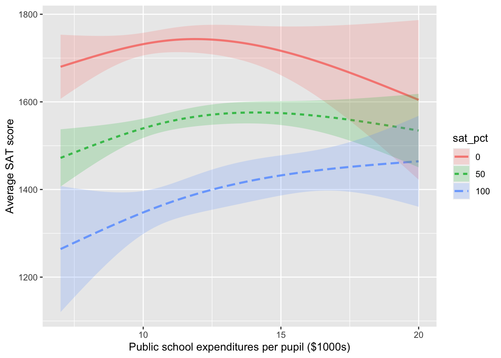
Note that the effect size of spending on SAT scores is positive when the expenditure level is less than $10,000 per pupil. And notice that when the fraction taking the SAT is near 0, the average scores don’t depend on expenditure. This suggests that among elite students, expenditure doesn’t make a discernable difference: it’s the students, not the schools that matter.
The relationship shown in Figure 3 is genuine. So is the very different relationship seen in Figure 4. How can the same data be consistent with two utterly different displays? The answer, perhaps unexpectedly, has to do with the connections among the explanatory variables. Whatever the relationship between each individual explanatory variable and the response variable, the appearance of that relationship will depend on how explanatory variables are connected to each other.
To demonstrate that the apparent relationship between an explanatory variable and a response variable – for instance, school expenditures and education outcomes – depends on the connections of the explanatory variable with other explanatory variables, let’s move away from the controversies of political issues and study some systems where everyone can agree exactly how the variables are connected. We’ll look at data produced by simulations where we specify exactly what the connections are.
A simulation implements a hypothesis: a statement about that might or might not be true about the real world. As a starting point for our simulation, let’s imagine that education outcomes increase with school expenditures in a very simple way: each $1000 increase in school expenditures per pupil results in an average increase of 10 points in the SAT score: an effect size of 0.01 points per dollar. Thus, the imagined relationship is:
\[\mbox{sat} = 1100 + 0.01 * \mbox{dollar expenditure}\]
Let’s also imagine that the fraction of students taking the SAT test also influences the average test score with an effect size of -4 sat points per percentage point. Adding this effect into the simulation leads to an imagined relationship of
\[\mbox{sat} = 1100 + 0.01 * \mbox{dollar expenditure} - 4 * \mbox{participation percentage} .\]
And, of course, there are other factors, but we’ll treat their effect as random with a typical size of \(\pm\) 50 points.
To complete the simulation, we’ll need to set values for dollar expenditures and participation percentage. We’ll let the dollar expenditures vary randomly from $7000 to $18,000 from one state to another and the participation percentage vary randomly from 1 to 100 percentage points.
Notice that in this simulation, both participation percentage and expenditures affect education outcomes, but there is no connection at all between the two explanatory variables. That is, the graphical causal network is that shown in Figure @ref(fig:school-sim-1).
dag_school1[[1]]
expenditure ~ unif(7000, 18000)
[[2]]
participation ~ unif(1, 100)
[[3]]
outcome ~ 1100 + 0.01 * expenditure - 4 * participation + eps(50)
attr(,"class")
[1] "list" "dagsystem"dag_draw(dag_school1)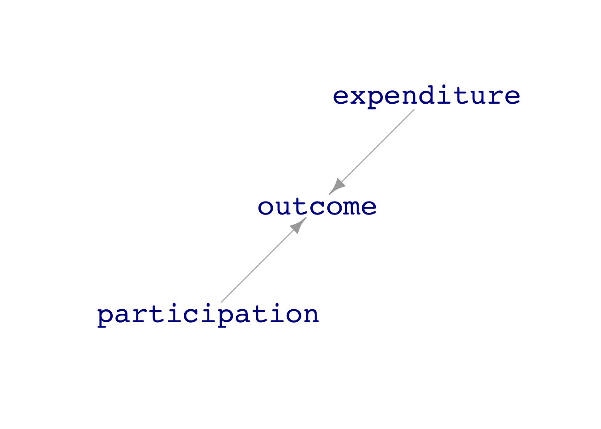
We can generate simulated data and use the data to train models. ?@fig-school-data-1 shows the data and two different models.
Dat1 <- sample(dag_school1, size=500)
mod1_1 <- lm(outcome ~ ns(expenditure,2), data = Dat1)
mod1_2 <- lm(outcome ~ ns(expenditure,2) * participation, data = Dat1)
mod_plot(mod1_1, interval="prediction") %>%
gf_point(outcome ~ expenditure, data = Dat1)
mod_plot(mod1_2, interval="prediction") %>%
gf_point(outcome ~ expenditure, alpha=~participation, data = Dat1, inherit=FALSE)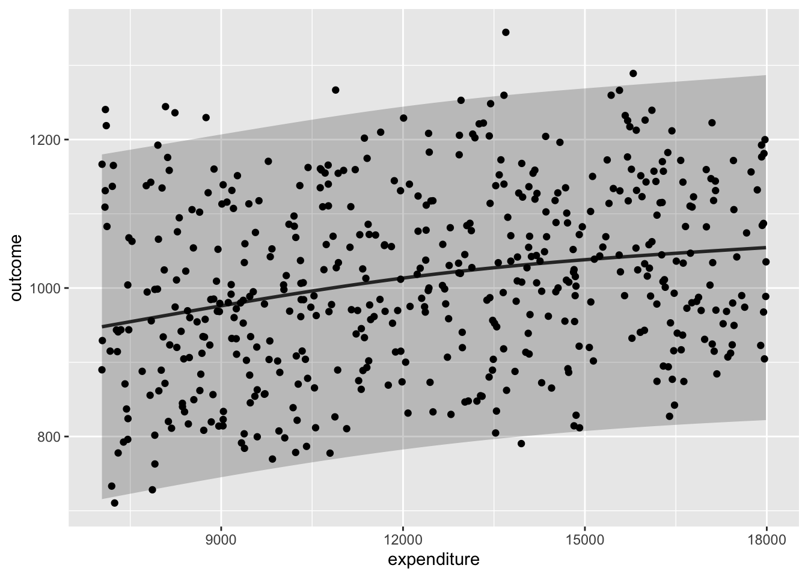
outcome ~ expenditure - (b) The model with participation as a covariate: outcome ~ expenditure + participation Both models (a) and (b) show the same effect size for outcome with respect to expenditure.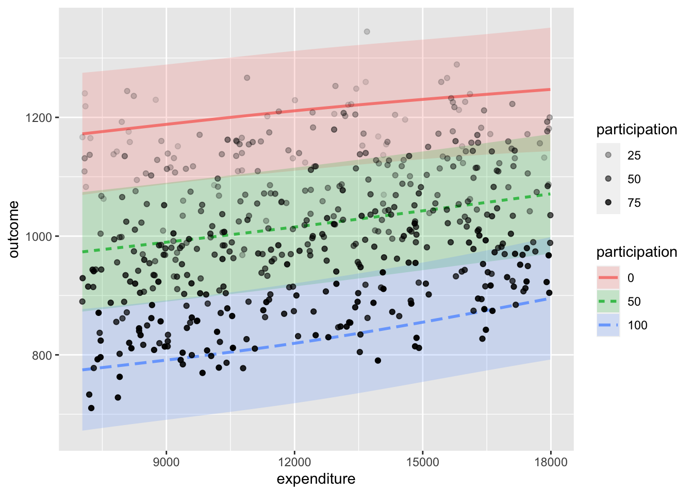
outcome ~ expenditure - (b) The model with participation as a covariate: outcome ~ expenditure + participation Both models (a) and (b) show the same effect size for outcome with respect to expenditure.The relationship between outcome and expenditure can be quantified by the effect size, which appears as the slope of the function. You can see that when the explanatory variables are unconnected, as in Figure 5, the functions have the same slope.
Now consider a somewhat different simulation. Rather than expenditures and participation being unconnected (as in the causal diagram shown in Figure 5), in this new situation we will posit a connection between the two explanatory variables. We’ll image that there is some broad factor, labeled “culture” in ?@fig-school-sim-2, that influences both the amount of expenditure and the participation in the tests used to measure education outcome. For instance, “culture” might be the importance that the community places on education or the wealth of the community.
dag_school2[[1]]
culture ~ unif(-1, 1)
[[2]]
expenditure ~ 12000 + 4000 * culture + eps(1000)
[[3]]
participation ~ (50 + 30 * culture + eps(15)) %>% pmax(0) %>%
pmin(100)
[[4]]
outcome ~ 1100 + 0.01 * expenditure - 4 * participation + eps(50)
attr(,"class")
[1] "list" "dagsystem"dag_draw(dag_school2)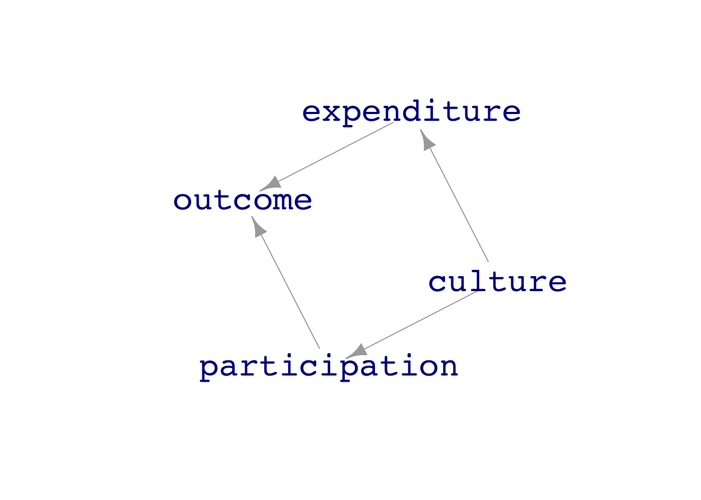
participation and expenditure as a function of culture.Again, using data from this simulation, we can train models:
outcome ~ expenditures, which has no covariates.outcome ~ expenditures + participation, which includes participation as a covariate.?@fig-school-data-2 shows the data from the new simulation (which is the same in both subplots) and the form of the function trained on the data. Now model (a) shows a very different relationship between expenditures and outcome than model (b).
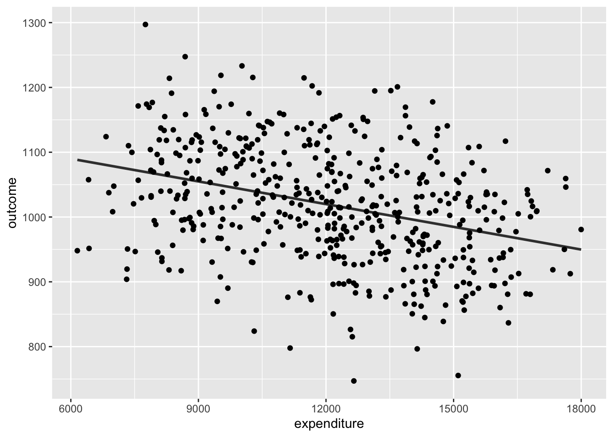
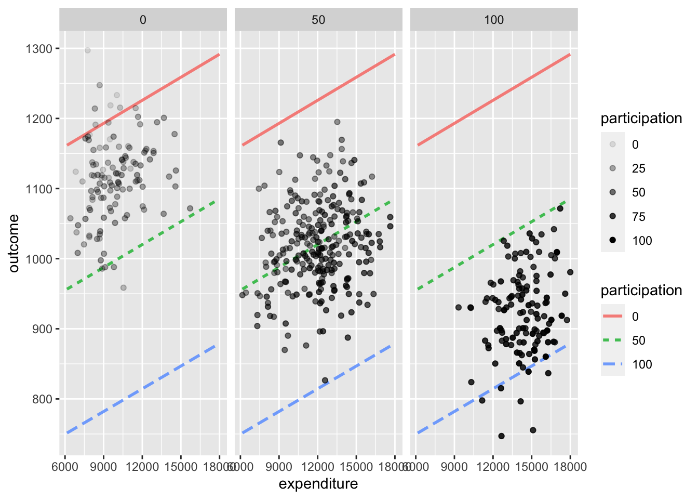
Since we know the exact mechanism in the simulation—outcome increases with expenditure—we know that model (b) matches the workings of the simulation while model (a) does not.
For the simulation where expenditure and participation share a common cause, failing to stratify on participation – that is, looking at the points in @fig:-school-data-2 (a) but ignoring color – gives an utterly different result than if the stratification includes participation.
It might be tempting at this point to conclude that your models should always include covariates. After all, for both simulations the model that included participation as a covariate gave the correct effect size of expenditures on outcomes. That turns out to be an over-simplification, as you’ll see in Learning Check XXX [about a collider].
Causality is about relationships among entities in the world, e.g. the immunological properties of the drug acetaminophen lead to a reduction in fever. Correlation is about relationships that are evident in data, which might or might not be due to direct causal connections. For example, people who take acetaminophen tend to have fever, but this is not because acetaminophen causes fever. Instead, people who are unwell, and perhaps have fever, are more likely to take acetaminophen than those who are asymptomatic.
Correlations are properly part of the evidence to support a claim or quantification of causation. Indeed, whenever there is a correlation between two variables, it’s likely that there is some chain of causal connections that links the two variables, even if that chain is not directly from one variable to the other. For instance, taking the flu vaccine is correlated with reduced mortality. Some of this correlation is due to the immunological properties of the vaccine itself. But some of the correlation results from healthy people being more likely to take the vaccine than sick people, and healthy people having a lower mortality than sick people.
Seen as a pessimist, this chapter can help you understand some of the ways that correlations can be present without a direct causal pathway, and how you can be badly mislead if you rely purely on data without any causal theory of the way your system works in the real world.
Seen as an optimist, this chapter is about ways of calculating effect sizes from data that allow you to incorporate knowledge of the causal connections amongst the variables in your data.
The field of statistics comprises both optimists and pessimists. Perhaps to oversimplify, the pessimists think the proper domain of statistics is data and stylized mathematical models, and ought not include speculative notions of causal connections in the real world. The only sort of causal connection that the pessimists will accept is that of the experimenter who sets the values of inputs, for example by giving one “treatment” group of patients a drug and another “control” group a “placebo”. This has been a highly productive attitude in statistics, resulting in the development of clever designs for experiments that give the most information with the least laboratory effort. Unfortunately, the no-causation-without-experimentation philosophy leaves us without recourse when working with a system where a controlled experiment is not feasible.
Perhaps the outstanding historical example of the limits of the no-causation-without-experimentation philosophy relates to the health effects of smoking. Nowadays, the morbidity and mortality caused by tobacco smoking is mainstream knowledge. Among the other proofs of the causal relationship is the decline in mortality due to lung cancer amoung populations where smoking became much less popular. Until the mid 1960s, however, some statisticians were in the vanguard of challenging the idea of a causal connection between smoking and, e.g., lung cancer. Notably, Ronald Fisher, generally considered to be the leading statistical figure of the 20th century, vehemently and influentially criticized the evidence for the causal connection.
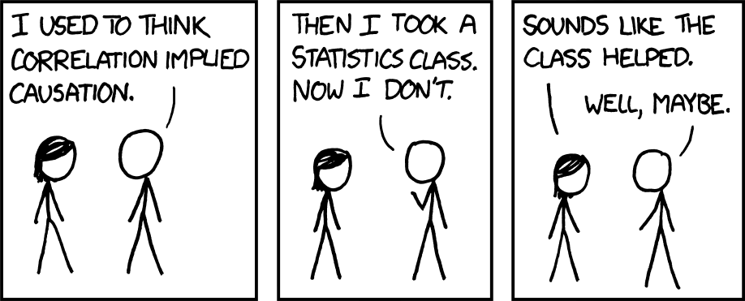
The optimists, again to oversimplify, believe it is possible to make useful statements (e.g. “the class helped” in Figure 11) about the causal connections that underlie data. They emphasize that statistics can support decision making even when knowledge of causation is incomplete and uncertain.
The optimists and the pessimists use the same set of mathematical and statistical tools for data analysis, particularly the calculation of effect sizes. The difference between them is the range of legitimate conclusions that can be drawn. The pessimists place in the center the idea that “correlation is not causation” and that only controlled experiment can be a justification for making causal conclusions. (We’ll study experiment in Lesson 32.) The optimists also see the difference between correlation and causation: correlation is a mathematical property, causation is a physical one. And the optimists accept that controlled experiment is an excellent way to form strong conclusions. But they accept other sources of knowledge or theoretical speculations as potentially useful, and use effect-size calculations in a way that, contingent on that knowledge or speculation, creates through the process of data analysis situations analogous to those created in the laboratory by careful experimentation.
The picturesque story of balls dropped from the Tower of Pisa may not be true. Galileo did record experiments done by rolling balls down ramps.↩︎